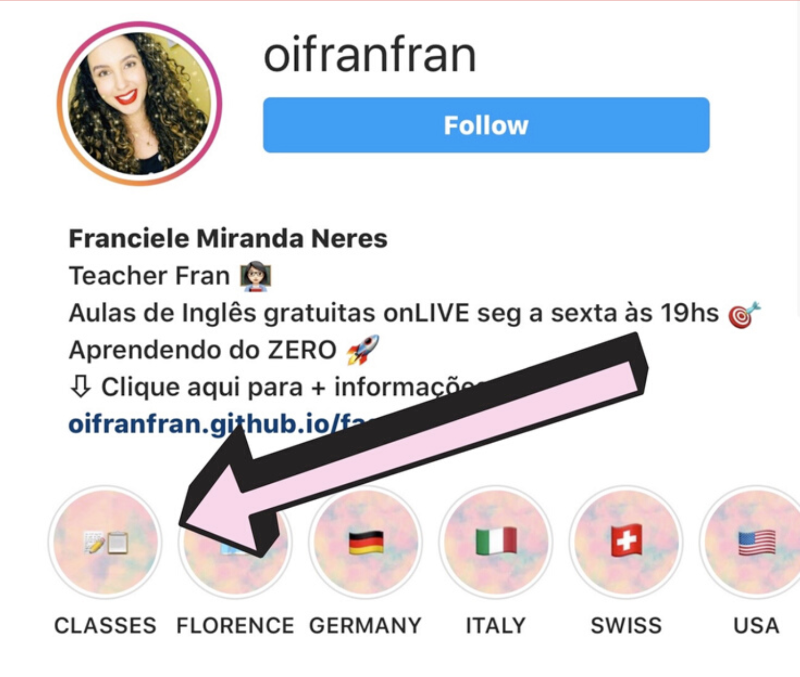

Mas FranFran, como faço pra participar?
É bem simples: comece a seguir @oifranfran e fique ligado nos conteúdos que vou postando aqui.
Mas FranFran, tem que pagar?
Não, não tem que pagar.
Mas FranFran, é para todas as idades?
SIMMMMMM É PARA TODAS AS IDADES!
Mas FranFran, como vou ter acesso ao material?
É bem simples: no começo da semana eu posto os temas das lives da semana inteira e todo dia antes da live eu disponibilizo o material nos meus stories e vou salvando as lousas/material que utilizaremos em um destaque chamado “classes”, você tira print, anota as informações em um caderno/folha/papel de pão/papel de recibo/boleto vencido ou o papel de sua preferência e disponibilidade e na hora da live nós trabalhamos em cima do tema proposto e do material disponibilizado.
Material disponível no destaque "Classes" 
Mas FranFran, quando acontecem as lives?
De seg à sex, às 19hs, horário de Brasília.
Mas FranFran, e se eu perder a live?
Não tem problema! Atualmente, as lives estão sendo salvas na íntegra e vão para o IGTV. Antes disso, eu fazia pequenos resumos que ainda estão disponíveis no IGTV!
Mas Franfran, cheguei agora, já tem muito conteúdo, estou perdido, não vou conseguir acompanhar, quero desistir.
NÃO HÁ O QUE TEMER! Chegou agora? Dá uma olhada no IGTV, veja os vídeos se possível, e fique de olho no cronograma semanal que posto no feed, assim você vai ficar a par de todos os assuntos e vai poder acompanhar as lives. :)
Mas Franfran, como vou encontrar as aulas que eu quero?
As aulas são numeradas, datadas e organizadas no cronograma semanal, e para encontrar a aula que vc quer é só selecionar lá no IGTV a semana que vc deseja consultar (Week 1, Week 2 etc). Para acessar as aulas que passaram, siga os seguintes passos: